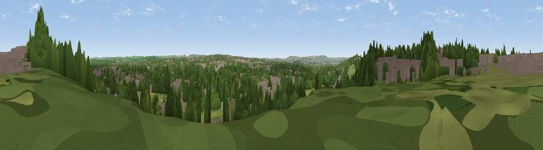

Viewpoint near Frenchay
#28057 in England · top 50% of its area beats it · near FrenchayWhere it is
The exact computed spot (ST 62575 77425). Click the marker for map links.
The view, rendered

A 360° render of this exact spot computed from the terrain model, tree cover and land cover — summer colours, afternoon light, calibrated against photographs of famous viewpoints. Real trees, hedges and buildings will differ in detail.
The panorama
Grey silhouette: terrain skyline in each direction (720 bearings, Earth curvature and refraction included). Dashed green: skyline with trees (+15 m) and buildings (+8 m) as obstacles. Blue strip: how far the ground is visible on each bearing.
Where the view opens
Wedge length = distance to the farthest visible ground on that bearing (vegetation-aware). Rings at 10, 25 and 50 km.
What fills the view
36% built-up · 33% woodland · 30% grassland · 1% cropland
Angular shares of the visible panorama (visual magnitude), not map area. Landscape diversity 0.50 (0–1 Shannon).
Key numbers
More beautiful places nearby
The staircase of upgrades: each row has a higher view potential than everything closer. Driving times are estimates from straight-line distance, calibrated against real road routing — check an actual route before setting out.
| Place | Direction | Drive | Score |
|---|---|---|---|
| Viewpoint near Harry Stoke | WSW · 2 km | ~4 min | 54.6 |
| Viewpoint near Almondsbury | NNW · 7 km | ~14 min | 68.3 |
| Viewpoint near Beach | SE · 11 km | ~21 min | 72.5 |
| Hanging Hill | SE · 11 km | ~21 min | 76.4 |
| Viewpoint near Stinchcombe | NNE · 23 km | ~38 min | 80.5 |
| Garway Hill | NNW · 51 km | ~72 min | 84.6 |
| Viewpoint near Holford | SW · 61 km | ~83 min | 85.9 |
| Viewpoint near West Quantoxhead | SW · 61 km | ~84 min | 87.9 |
51.49452, -2.54048 · source: screening · position refined by local search. Computed location — check access rights before visiting.